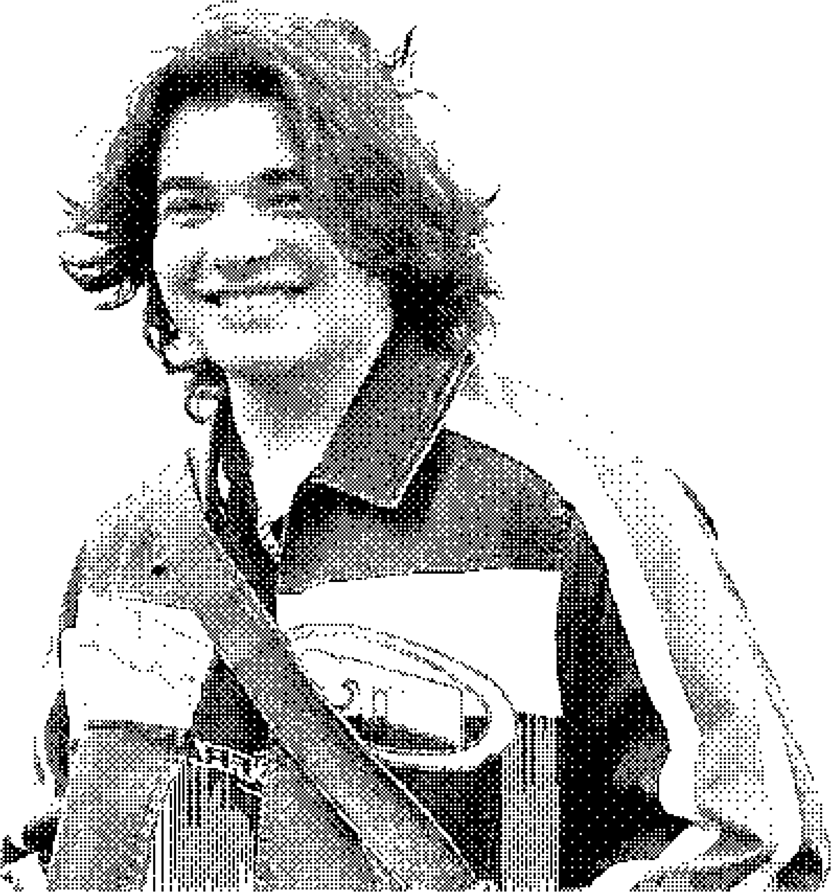
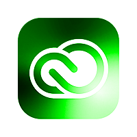
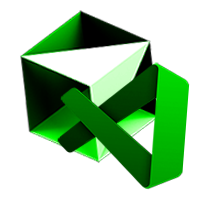
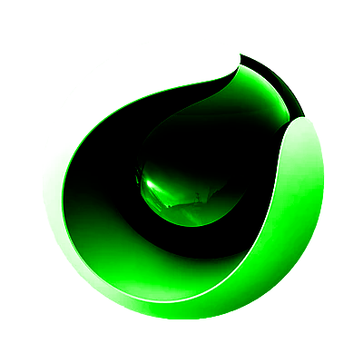
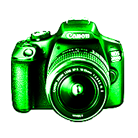

2026
-2027
MINOR IN STUDENT DESIGN AGENCY
ZHdK — Zurcher Hochschule der Kunste, Zurich CH
Interaction Design Scholar, CH
I'm Kimi Rusconi. At the moment, I'm attending the Zurcher Hochschule der Kunste (ZHdK), and pursuing a bachelor's degree in Interaction Design. I love art in its every shape, whether it is more conventional, like visual arts, film, and music, or less conventional, like performance art, installations, and whatever sparks a thought. Currently, I'm looking for opportunities in affiliated fields that will give me the chance to expand my knowledge, understanding, and appreciation of art.

ZHdK — Zurcher Hochschule der Kunste, Zurich CH
ZHdK — Zurcher Hochschule der Kunste, Zurich CH
CSIA — Centro Scolastico delle Industrie Artistiche, Lugano CH
Made a modular social media post template, formulated a guide for social media and SEO promotion, and updated the visual identity of painting firm Sandro Sormani SA.
Proposed an idea alongside Animorph.co for the redesign of Northern Irish not-for-profit organization Belfast Interface Project.
Printing and pre-printing formative internship at Fontana Print SA.
Formative internship at AIL SA's IT department.
Started my own independent apparel brand, focused on upcycling of fabrics and 0 waste production.
Developed a series of Instagram and LinkedIn content for ZHdK's IAD sections social media platforms, covering the collaboration between IAD and disability awareness experts.
Developed video content for #Cine Lugano's Instagram account. And still occasionally do.
Participating as an illustrator to the yearly event Global Game Jam: an event where devs, artists, and enthusiasts gather to develop a videogame in 48 hour.
Became responsible for the Centro Scolastico delle Industrie Artistiche's school magazine, Pagina Bianca, for about a year.
Italian
English
German
French

Adobe suite
Office 365
UI/UX
Prototyping

AI Assisted
Coding

3D

Photography/
Videomaking